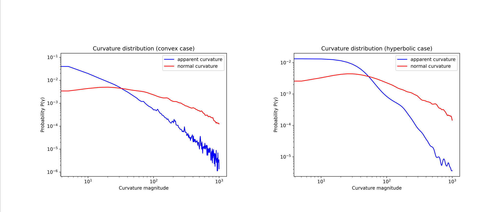
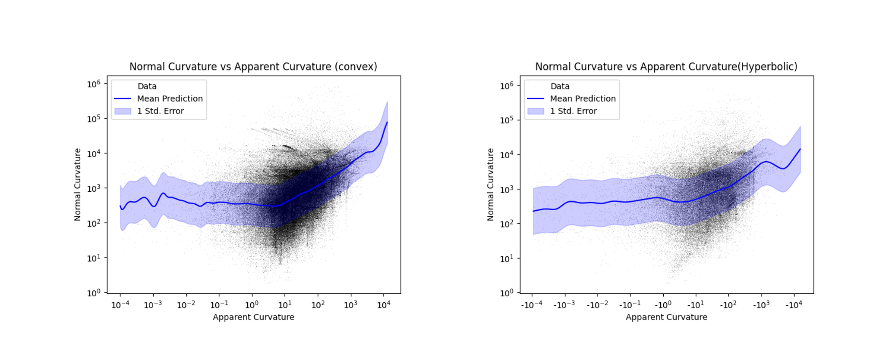
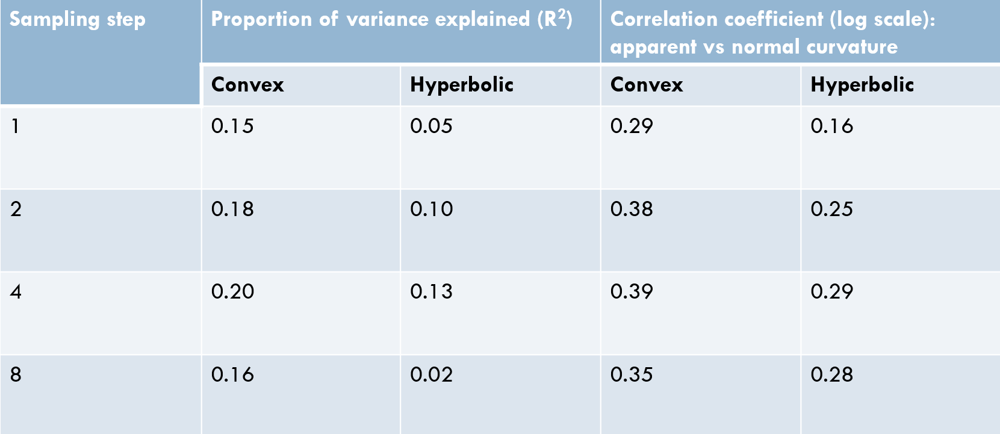

Result¶
Result Overview¶
Figure:Distribution of Normal/Apparent Curvature¶
it’s clear that normal curvature tended to be higher over apparent curvature. A possible reason could be that points with higher normal curvature tend to be positioned on the rim
Figure:Normal vs Apparent Curvature¶
The scatter plot reveals a noticeable positive relationship between the magnitude of the apparent curvature and the normal curvature
We further delve into this by using kernel regression to predict the normal curvature from apparent curvature for both convex and hyperbolic scenarios.the blue lines is result of kernel regression, for both convex and hyperbolic case
we can see that its predictive capacity is peek at an intermediate scale. It tells us that low curvature, in other word flat curve constrain 3d shape less than the curve with high curvature.
Table: Normal vs Apparent Curvature¶
Moving on to the Table, our table highlights that by sampling 4 points around the vertex, we achieve the maximum proportion of variance. which is 0.19. it means that apparent curvature explain about 19% variance, which tells us apparent curvature can predict normal curvature to some extent
The distinct contrast between curvature in the convex and hyperbolic scenarios demonstrates that the convex scenario shares a tighter quantitative link with the 3D rim